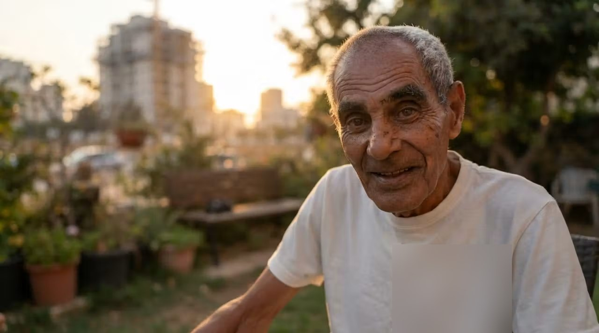

Почему BeKavod?
Я перевёз деда в Израиль. А через год перестал жить своей жизнью.
Он уходил из дома. Я срывался с работы искать его — и работу потерял. Не уезжал на выходные. Спал вполуха: ночь — самое опасное время.
Этого не принято говорить вслух: ухаживать за близким тяжело. И оттого, что любишь, легче не становится.
Я не хотел отдавать деда в дом престарелых. Но и терять свою жизнь я тоже не хотел.
Поэтому я собрал систему. Не чтобы следить — чтобы перестать сторожить. Подойдёт к калитке — телефон разбудит за четыре секунды. Не случилось ничего — меня не трогают.
Дед живёт дома. Я работаю, вижусь с людьми и сплю.
כבוד — достоинство. Обоих.